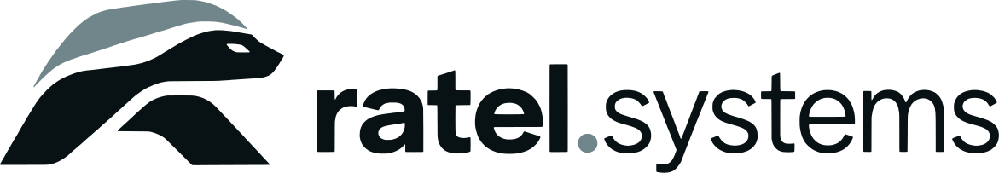

Teklif Paketi — Kelepçe Sıkma Uçları
Kelepçe ölçüleri onaylı

Anında teklif platformuna (Xometry vb.) yükleme
Her parça ayrı yüklenir; teknik resim PDF'i ilgili parçaya eklenir (diş, tolerans, ısıl işlem ve yüzey resimde).
| Parça | Dosya | Süreç | Malzeme | Isıl işlem / yüzey | Not |
|---|---|---|---|---|---|
| v1 mil | kelepce-ucu-revI.step | CNC torna + freze (C eksen) | 42CrMo4 (1.7225) · AISI 4140 | Isıl işlem ve kaplama yok · işlenmiş, Ra 3,2 µm, kaplamasız | 8 mm altıgen sap (SW 8 × 30) · lazer logo (Ratel) |
| v2 mil | kelepce-ucu-v2-revG-mil.step | CNC torna + freze (C eksen) | 42CrMo4+QT (1.7225, AISI 4140), ıslahlı çubuk | Ek ısıl işlem yok (≈ 28–32 HRC) · kumlama + siyah oksit | 8 mm altıgen sap · yatak yeri Ø20 h6 ince tornalanır · segman kanalı DIN 471 |
| v2 kovan | kelepce-ucu-v2-revG-kovan.step | CNC torna + tırtıl | EN AW-6082 T6 alüminyum | siyah eloksal | Rulman yuvaları Ø32 K7 · tırtıl RGE 30° 0,8 (STEP'te düz) · lazer logo (Ratel) |
| Kalem | Değer |
|---|---|
| Adet | 1, 3 ve 10 adet için ayrı fiyat |
| Lazer logo (v1) | Platformda “Lazer kazıma” seçilir; kelepce-ucu-revI-lazer-kazima.pdf ve kelepce-ucu-revI-logo-1-1.dxf parçaya ek dosya olarak yüklenir |
| Hazır alınan (v2) | 2 × 6804-2RS rulman, 1 × DIN 471 20 × 1,2 segman; montaj resimdeki sırayla |
| Genel tolerans | ISO 2768-m |
| Tahmini ağırlık | v1 0,11 kg · v2 mil 0,2 kg · v2 kovan 0,05 kg |
| Deneme | Akülü vidalamanın mandreninde oturma ve salgı; v2 kovan elde serbest dönmeli |